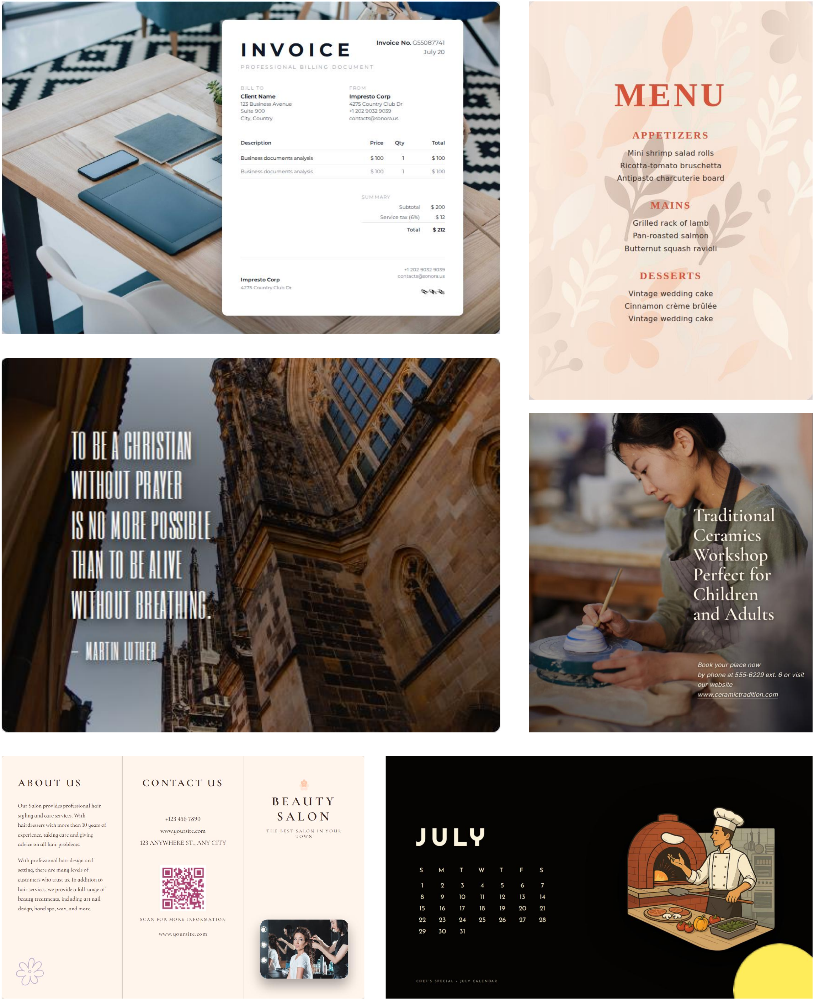
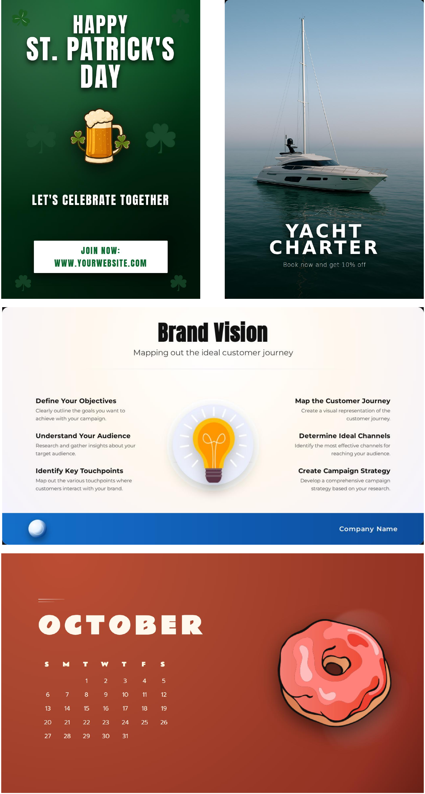

🎨More Results



Graphic design generation demands a delicate balance between high visual fidelity and fine-grained structural editability. However, existing approaches typically bifurcate into either non-editable raster image synthesis or abstract layout generation devoid of visual content. Recent combinations of these two approaches attempt to bridge this gap but often suffer from rigid composition schemas and unresolvable visual dissonances (e.g., text-background conflicts) due to their inexpressive representation and open-loop nature. To address these challenges, we propose DesignAsCode, a novel framework that reimagines graphic design as a programmatic synthesis task using HTML/CSS. Specifically, we introduce a Plan-Implement-Reflect pipeline, incorporating a Semantic Planner to construct dynamic, variable-depth element hierarchies and a Visual-Aware Reflection mechanism that iteratively optimizes the code to rectify rendering artifacts. Extensive experiments demonstrate that DesignAsCode significantly outperforms state-of-the-art baselines in both structural validity and aesthetic quality. Furthermore, our code-native representation unlocks advanced capabilities, including automatic layout retargeting, complex document generation (e.g., resumes), and CSS-based animation.
Pioneer the use of HTML/CSS as the unified representation for graphic design, enabling professional-grade styling, native editability, and direct browser rendering.
Integrate semantic planning with visual-aware reflection to reason over complex hierarchies and autonomously rectify rendering dissonances.
Significantly outperform baselines in both objective and subjective evaluations, while unlocking advanced capabilities like layout retargeting and CSS animation.
Overall framework of DesignAsCode. Given a user prompt, the Semantic Planner generates a structured design plan (layout reasoning, element groupings, image prompts, and text specs). The Implementation module acquires visual assets and synthesizes an initial HTML/CSS draft. Finally, Visual-Aware Reflection iteratively renders, optimizes, and refines the code to resolve visual dissonances.
| Dataset | Method | Objective Metrics | Subjective Metrics | ||||||
|---|---|---|---|---|---|---|---|---|---|
| Val ↑ | Ali ↓ | Rea ↓ | Clip ↑ | Text ↑ | Image ↑ | Layout ↑ | Color ↑ | ||
| Crello | DesignAsCode (Ours) | 0.9521 | 0.0008 | 0.0849 | 0.6287 | 74.06 | 65.86 | 63.67 | 68.42 |
| DeepSeek-R1 | 0.9224 | 0.0040 | 0.0970 | 0.5478 | 71.08 | 37.10 | 57.47 | 61.03 | |
| Qwen3-30B | 0.8930 | 0.0057 | 0.0989 | 0.5386 | 68.22 | 35.12 | 55.60 | 57.98 | |
| Qwen3-8B | 0.9131 | 0.0031 | 0.1152 | 0.5196 | 57.62 | 34.25 | 41.14 | 49.89 | |
| GPT-5 | 0.6931 | 0.0005 | 0.1466 | 0.5669 | 73.51 | 41.26 | 57.19 | 65.48 | |
| OpenCOLE | — | — | — | 0.5864 | 48.57 | 65.09 | 56.30 | 53.63 | |
| Broad | DesignAsCode (Ours) | 0.9905 | 0.0003 | 0.0911 | 0.6732 | 68.63 | 54.06 | 55.46 | 67.63 |
| DeepSeek-R1 | 0.9881 | 0.0026 | 0.1031 | 0.6205 | 60.08 | 34.08 | 42.88 | 58.92 | |
| Qwen3-30B | 0.9714 | 0.0012 | 0.0983 | 0.6213 | 60.84 | 29.18 | 41.04 | 57.88 | |
| Qwen3-8B | 0.9892 | 0.0016 | 0.1338 | 0.5911 | 46.32 | 30.72 | 30.96 | 50.32 | |
| GPT-5.1 | 0.9458 | 0.0001 | 0.1219 | 0.6226 | 75.96 | 44.56 | 50.76 | 57.80 | |
| OpenCOLE | — | — | — | 0.6108 | 46.44 | 53.68 | 48.64 | 56.00 | |
Qualitative comparison. The leftmost column displays the input text prompts. The top three rows show results on the Crello test set, while the bottom three rows show results on the Broad test set.
More qualitative comparisons between DesignAsCode and baselines across both benchmarks.
| Method | Val ↑ | Ali ↓ | Rea ↓ | Clip ↑ | Text ↑ | Image ↑ | Layout ↑ | Color ↑ |
|---|---|---|---|---|---|---|---|---|
| DesignAsCode (Full) | 0.9521 | 0.0008 | 0.0849 | 0.6287 | 74.06 | 65.86 | 63.67 | 68.42 |
| w/o HTML Representation | 0.9559 | 0.0030 | 0.0878 | 0.6210 | 55.35 | 64.24 | 58.07 | 53.91 |
| w/o Semantic Planner | 0.9389 | 0.0004 | 0.0950 | 0.5896 | 67.62 | 61.14 | 52.78 | 64.25 |
| w/o Visual Reflection | 0.9357 | 0.0025 | 0.0942 | 0.6299 | 64.21 | 62.64 | 58.97 | 60.99 |

Structural Editing and Layout Retargeting. (Top) Global theme switching via CSS variables. (Bottom) Content-aware layout retargeting, where elements automatically reflow to fit new aspect ratios.
Complex Information Layouts. A Calendar demonstrating precise grid alignment, a Business Timeline visualizing a multi-step process, and a Menu maintaining rigorous price-list alignment.
Code-Native Extensions. (Top) CSS keyframe animation for dynamic poster effects. (Bottom) Perfect multilingual text rendering (English, Chinese, Japanese, Korean) via font-family switching.
Rich Visual Effects via HTML/CSS. (a) Blend modes for artistic compositing. (b) Glow effects via CSS. (c) Shadows and gradients for text emphasis.
@article{liu2026designascode,
title = {DesignAsCode: Bridging Structural Editability and
Visual Fidelity in Graphic Design Generation},
author = {Liu, Ziyuan and Sun, Shizhao and Huang, Danqing
and Shi, Yingdong and Zhang, Meisheng and Li, Ji
and Yu, Jingsong and Bian, Jiang},
journal = {arXiv preprint arXiv:2602.17690},
year = {2026},
url = {https://arxiv.org/abs/2602.17690}
}